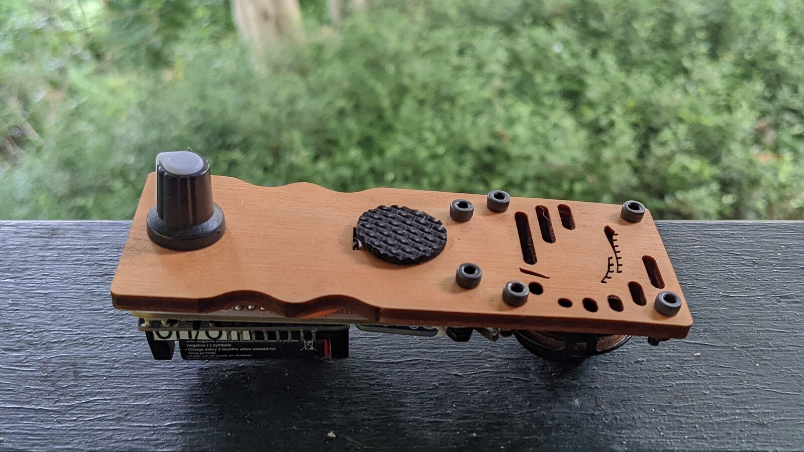
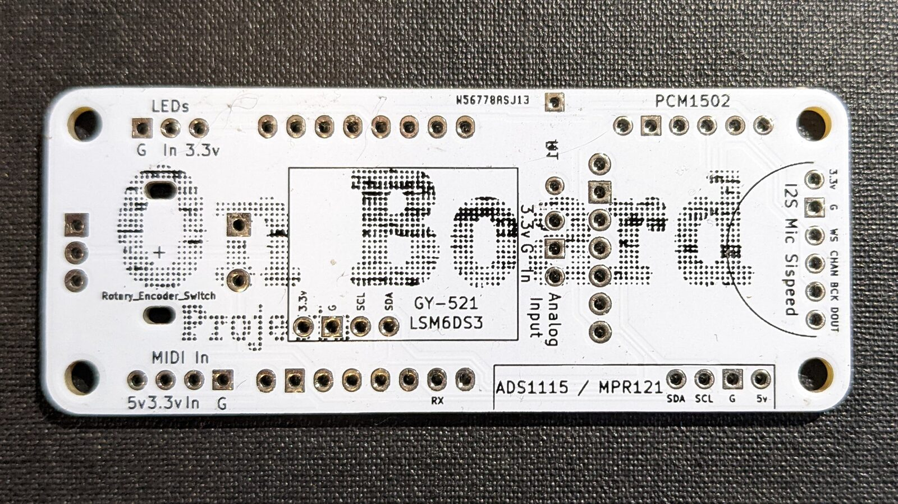
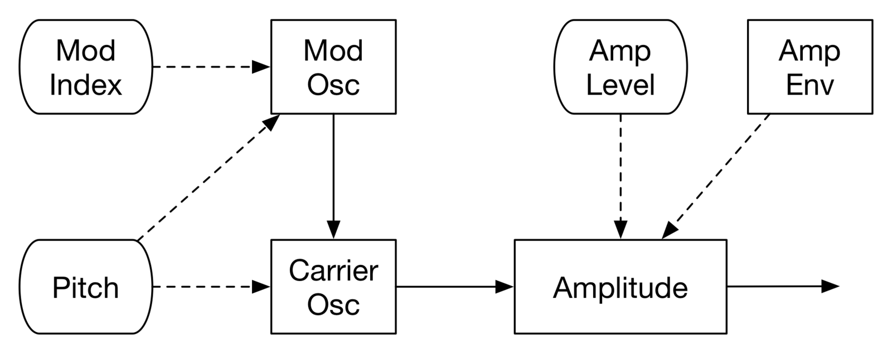
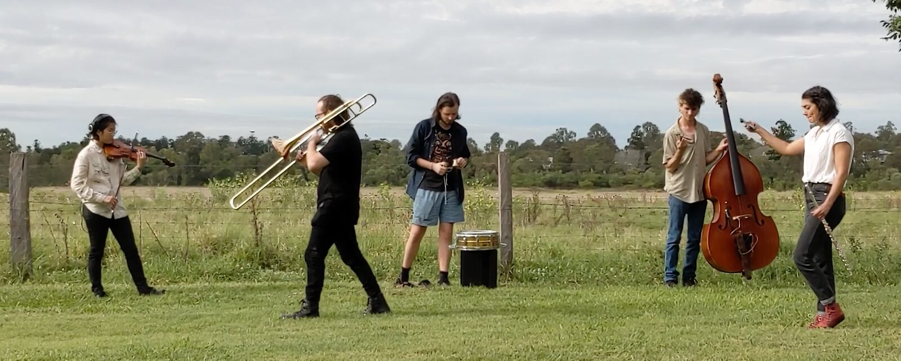

On Board Call: A Gestural Wildlife Imitation Machine
Abstract
The On Board Call is a bespoke musical interface designed to engage the general public’s interest in wildlife sounds—such as bird, frog or animal calls—through imitation and interaction. The device is a handheld, battery-operated, microprocessor-based machine that synthesizes sounds using frequency modulation synthesis methods. It includes a small amplifier and loudspeaker for playback and employs an accelerometer and force sensor that register gestural motions that control sound parameters in real time. The device is handmade from off-the-shelf components onto a specially designed PCB and laser cut wooden boards. Development versions of the device have been tested in wildlife listening contexts and in location-based ensemble performance. The device is simple to use, compact and inexpensive to facilitate use in community-based active listening workshops intended to enhance user’s appreciation of the eco acoustic richness of natural environments. Unlike most of the previous work in wildlife call imitation, the Call does not simply play back recorded wildlife sounds, it is designed for performative interaction by a user to bring synthesized sounds to life and imbue them with expression.
Author Keywords
Synthesis, Hardware, Wildlife, Calls, Interaction, Performance
CCS Concepts
Hardware → Sound-based input / output; Tactile and hand-based interfaces; PCB design and layout;
Applied computing → Performing arts;
Human-centered computing → Empirical studies in interaction design;
Introduction
The On Board Call device is a handheld electronic gestural instrument that synthesises sounds resembling wildlife calls. It is designed to encourage deep listening and personal expression through imitation of natural sounds and as a performance tool.
The Call is being developed as part of the Place, Loss, Aesthetics, Creativity, Extinction (PLACE) art-science project at Griffith University. This project explores ways of knowing and understanding natural environments through aesthetically-focused activities on sites. The project is especially interested in the eco-acoustic sounds of wildlife and how we can listen, compose and perform to appreciate them more deeply.
This article focuses on the design of the Call device and explores its hardware and software features and reports on user testing of the first handmade versions.
Background
There is a rich history of scientific investigation into wildlife calls that can inform a project like this. Books such as Animal Acoustic Communication (1998) and articles in the Journal of Animal Behaviour, and similar, provide detailed investigations into wildlife biology and sound-making behaviours. In more recent years, researchers in eco-acoustics have paid close attention to wildlife calls with the intention of developing software recognisers for monitoring and tracking various species. These investigations provide information about how animals create sounds, what the purpose of sound making might be, and how calls are identified with particular species.
Sound devices for stimulating and imitating wildlife have been developed over a long time. Most prominent are acoustic devices for hunting and birding that produce wildlife calls designed to provoke a call response or to attract specific species. Typically, these devices include whistles, ratchets, or friction-based sound makers. Electronic simulation of wildlife calls has developed as an area of research over the past few decades, however few of these systems have been targeted at mobile uses even though many would run on modern mobile phone platforms if required.
Previous examples of software simulations of Wildlife calls are surprising abundant. Over the years, various synthesis techniques have been deployed. Processes for FFT-based analysis and additive or FM synthesis of physical sounds of nature can be found in the book Designing Sound [1] and online from Joel Pinteric at Cosine Sound.1 Not surprisingly, physical modelling approaches can be useful, as in the work of Kahrs et al. [2] and Smyth et al. [3]. Online tools for bird sound synthesis using WebAudio were developed by Chinmay Pendharkar2. Probabilistic techniques have shown a lot of promise through the work of Katahira et al. [4], Bonada et al. [5] and Gutscher et al. [6]. More recently, machine learning has been employed [7]. Most of these attempts have focused on imitating one, or several, species of birds and many have been quite detailed and methodical. Variations in spectromorphology are generally implemented with fixed parameter envelopes.
Building on this tradition the Call device uses a microprocessor-based audio system to synthesize sounds under gestural control and prioritises ease of use and sonic flexibility over imitative accuracy. Because this project employs microprocessors with limited computational power, frequency modulation synthesis was chosen for synthesizing the sounds due to its computational efficiency in the creation of rich harmonic spectra.
The Call utilises gestural sensor technologies well-established in the NIME community, including accelerometers and force sensing resistors. This is similar to previous handheld sound synthesis devices described in NIME proceedings, such as those reported in Smyth [8] and, even more similarly, in Piepenbrink [9].
The Call project focused on a compact and inexpensive device design with minimal gestural dimensions. This was designed to make the Call suitable for use by the general public in community workshops or for infrequent personal interaction.
The remainder of this article outlines the hardware and software considerations, then goes on to describe user testing of the device.
Hardware Design
The project followed an iterative design framework that worked through cycles of product definition, requirement specification, ideation, prototyping, and testing. The Call was designed to be handheld. It leveraged techniques from previous On Board designs by the author, where all components were mounted on a single frame. These frames were either a laser cut mounting board and/or a custom designed PCB. Components were selected to fit within a handheld size constraint. As shown in Figure 1, attached to a laser cut wooden frame is a 40mm loudspeaker and a custom PCB board. The shaft of a rotary encoder mounted to the PCB is also attached to the wooden frame. A force sensor sits underneath a rubber pad on top on the wooden frame and connects through to the PCB. The PCB holds a ESP8266 microprocessor board with battery case, an accelerometer, and an I2S audio decoder/amplifier.


Figure 1
The On Board Call
Gestural control is facilitated by a 6050-accelerometer board that communicates pitch and yawl movements via the I2C protocol to the microprocessor. Accelerometer values are mapped to vary audio frequency and timbre. A force sensitive resistor pad connects to an analogue GPIO pin on the microprocessor and provides real-time control of audio amplitude. A rotary encoder, with an inbuilt push switch, is used for non-performance functions including as a volume control and to select different synthesis algorithms each designed to imitate a different wildlife category.
The brain of the device is a battery controlled ESP8266 microprocessor board. This processor is often used for wireless control but, in this case, it was selected for its small size, compute-to-cost ratio, and good support for the I2S audio protocol.
Audio output is enabled by an Adafruit MAX98357A breakout board that incorporates an I2S audio decoder and 3-watt monophonic amplifier. This board is connected to the loudspeaker for playback.
The electronic components are mounted on a custom 3 x 7cm PCB shown in Figure 2. The use of the PCB simplifies assembly and helps make the device more robust—which is important for a gestural controller that is frequently shaken. The size was kept as compact as possible to maintain the handheld objective and to minimise resource usage in production. It should be noted that the Call does not use all the connections on the PCB which was designed for use in a series of similar projects.


Figure 2
Custom designed PCB
Software Design
Software design started with analysis of birds, fish and frog calls common to the Oxley Creek Common site used for the PLACE project. From spectral analyses of these sounds, the range of pitch and timbral variation were determined. Through this analysis it became clear that the range of harmonic and in-harmonic spectra common to these species could be replicated using simple frequency modulation approaches. A simple two-operator FM synthesis architecture is used as shown in Figure 3.


Figure 3
Synthesis architecture and gesture control for the On Board Call
Some calls comprise more than one sound generating component and in these cases the architecture is duplicated. Synthesis parameter values and ranges are set in a series of presets, each oriented toward a particular species or group of species. Within these constraints, the control of real-time pitch and timbre changes is left to the performer. At times calls include rapid envelope repetitions that would be difficult to perform, and so some presets allow for triggering of envelope automation to simulate these effects.
The software was built with the Arduino IDE and uses the Mozzi audio synthesis library for sound generation. Future versions may use the author’s M16 audio synthesis library. Adafruit libraries are used for communications with the accelerometer and audio DAC boards.
The Call software assumes a human performer/controller and limits parameter controls to facilitate ease of use. This focus both simplifies the synthesis architecture and shifts the software development effort toward smooth real-time mapping of gesture data to synthesis. The x and y axis for the accelerometer are mapped to pitch and timbre change. Each parameter is set to a value at ‘resting’ state where the device is held flat and horizontal to the ground. Sigmoid curves were used on parameter mapping to assist with stability near this resting state. The starting pitch is set at a mid-range frequency, often somewhere between 500 and 1000 htz, and resting timbre set close to a pure sine wave. Deviations from the horizontal either increase or decrease pitch or change the modulation index to enrich the timbral spectrum. Different carrier-to-modulation pitch ratios are set for left and right tilt to extend the timbral range possible with a single preset. Loudness is controlled by pressure on the force sensor, applied with a finger or thumb, the mapping of which is non-linear to maximise expressive control. For some algorithm presets, pressure also triggers a repeated amplitude envelope to emulate repetition effects like those of the Kookaburra.
The rotary encoder defaults to being a master volume control, but can also be used to adjust synthesis parameters or select different algorithm presets that might better suit imitation of particular species. These changes are typically done in-between performances.
User Trials
Like all new interface designs the Call evolved through numerous prototype iterations. Benchtop testing of both hardware and software prototypes was sufficient to get to versions that largely look and felt like the current version depicted in Figure 1.
Several field trials were conducted by the developer and the five-person PLACE project team and three professional musicians during in-field sessions at the Oxley Creek Commons nature reserve. These trials included both individual imitation/listening sessions and rehearsals for public performance with the Call alongside acoustic instruments also used to imitate wildlife calls, as shown in Figure 4. A video about the project includes of one of these performances including several Call devices, available at https://youtu.be/uKgLrrI-MEU starting at the 12 min mark.


Figure 4
Musicians performing with acoustic instruments and On Board Call devices at Oxley Creek Common
Design changes implemented following these in-field experiences included adjustment to the speaker grill to maximise volume, enhanced parameter smoothing algorithms to avoid discontinuous changes, and enhanced robustness of construction to withstand more aggressive gestural movements and different preferences for holding the devices.
Consultation with two birding community members was undertaken about the application in their activities or uses by their members. This consultation involved several sessions with them playing with the device and comparing notes about call analysis based on recordings and spectral analyses. The value of this feedback is that birders are very experienced wildlife observes and listeners. The response of them was enthusiastic and they provided valuable insights into the some of the areas for extension of the synthesis and gestural control to enable a wider range of calls. Design changes required because of feedback from this community included extensions to the software such as presets for different species and envelope repetition to enable more flexibility in the range of calls possible and more accurate imitation of particular species.
Overall, the Call device proved to be fit for purpose and interaction with users introduced useful enhancements. There remain several possible areas for extension and development. One is to provide a wider range of software presets that suite the sound world of more environments, or that provide different expressive soundscapes for musical performances. Another is to provide a version with a fully enclosed case that will be more robust and safer for use by a broader audience, especially those inexperienced with electronic audio interfaces.
Conclusion
The objective for the On Board Call was to design and build a device that could engage a general audience in imitation of wildlife sounds in natural environments. As such, the precision of call synthesis was not critical but rather cost and ease-of-use were prioritised.
The Call can be used for imitating the sounds of wildlife, or other environmental sounds. When used in this way the user is typically paying close attention to the sounds and try to match the amplitude, pitch and timbral variations as best they can. User trials suggest that this can be an engaging experience as an enhancement to appreciating natural settings. There does need to be caution about the introduction of artificial sounds into wildlife settings. A systematic and standardised review of the scientific literature from 1990 to 2013 on the effects of anthropogenic noise on wildlife was published by Shannon and his colleagues. [10] It concluded there is considerable evidence that anthropogenic noise is detrimental to wildlife. The paper highlights that those impacts vary with volume and duration of noise exposure. Bearing this in mind, the use of the Call in any particular location should be short term and infrequent. The volume is low by design, but care should be taken with loudness during in-field use.
The Call can also be used for musical performance, especially useful for improvised sessions. In these situations, it can act like a timbrally-enhanced Theremin, and experiences show that it can be quite expressive due to its responsiveness to subtle gestural movements. Another option, yet to be explored, is to provide a software-only version as a mobile app. This has not been pursued to date because there was deemed to be a special character in a bespoke device specifically designed for the purpose that did not potentially distract users from the task at hand. User reactions to date seem to confirm that intrigue in the hardware enhances the experience of participants.
The On Board Call brings together a range a techniques and technologies into a new interface for sonic expression. It draws on a gestural partnership with a user in a way more typical of a musical instrument than is generally evident in wildlife call simulations systems built to date, and it’s handheld design enables convenient use in outdoor environments.
Ethics Statement
This project was conducted within the ethics oversight of Griffith University. Attention was paid to utilising materials to their maximal capacity to minimise waste. All participants were involved voluntarily, and musicians were paid market rate performance fees for their contributions. The project was funded by Griffith University’s Climate Action Beacon and supported by the university’s Creative Arts Research Institute and the Interactive Media Lab. Care was taken to minimally disrupt wildlife during the field work, especially around keeping sound volume levels low and limiting time spent in any one location.
Footnotes
Citations
- ↩Farnell, A. (2010). Designing Sound. The MIT Press.
- ↩Kahrs, M., & Avanzini, F. (2001). Computer synthesis of bird songs and calls. Proc. COST G6 Conf. on Digital Audio Effects (Limerick, Ireland, December 2001), 23–27.
- ↩Smyth, T., Abel, J. S., & Smith, J. O. (2003). The estimation of birdsong control parameters using maximum likelihood and minimum action. Proceedings of SMAC, 3, 413–416.
- ↩Katahira, K., Suzuki, K., Okanoya, K., & Okada, M. (2011). Complex sequencing rules of birdsong can be explained by simple hidden Markov processes. PloS One, 6(9), e24516.
- ↩Bonada, J., Lachlan, R., & Blaauw, M. (2016). Bird song synthesis based on hidden markov models. Interspeech 2016; 2016 Sep 08-12; San Francisco (CA).[Baixas]: ISCA; 2016. p. 2582-6.
- ↩Gutscher, L., Pucher, M., Lozo, C., Hoeschele, M., & Mann, D. C. (n.d.). Statistical parametric synthesis of budgerigar songs. Proc. 10th ISCA Speech Synthesis Workshop, 127–131.
- ↩Bhatia, R. (2021). Bird song synthesis using neural vocoders. Itä-Suomen yliopisto.
- ↩Smyth, T. (2006). Handheld Acoustic Filter Bank for Musical Control. Proceedings of the International Conference on New Interfaces for Musical Expression, 314–317. https://doi.org/10.5281/zenodo.1177007
- ↩Piepenbrink, A. (2018). Embedded Digital Shakers: Handheld Physical Modeling Synthesizers. In T. M. Luke Dahl Douglas Bowman (Ed.), Proceedings of the International Conference on New Interfaces for Musical Expression (pp. 362–363). Virginia Tech. https://doi.org/10.5281/zenodo.1302623
- ↩Shannon, G., McKenna, M. F., Angeloni, L. M., Crooks, K. R., Fristrup, K. M., Brown, E., Warner, K. A., Nelson, M. D., White, C., Briggs, J., & others. (2016). A synthesis of two decades of research documenting the effects of noise on wildlife. Biological Reviews, 91(4), 982–1005.